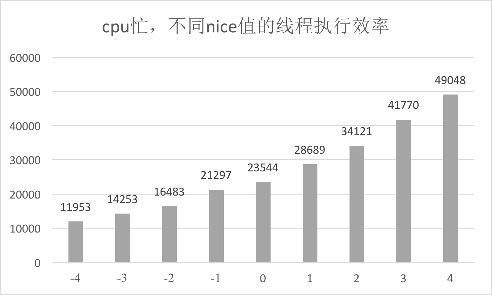
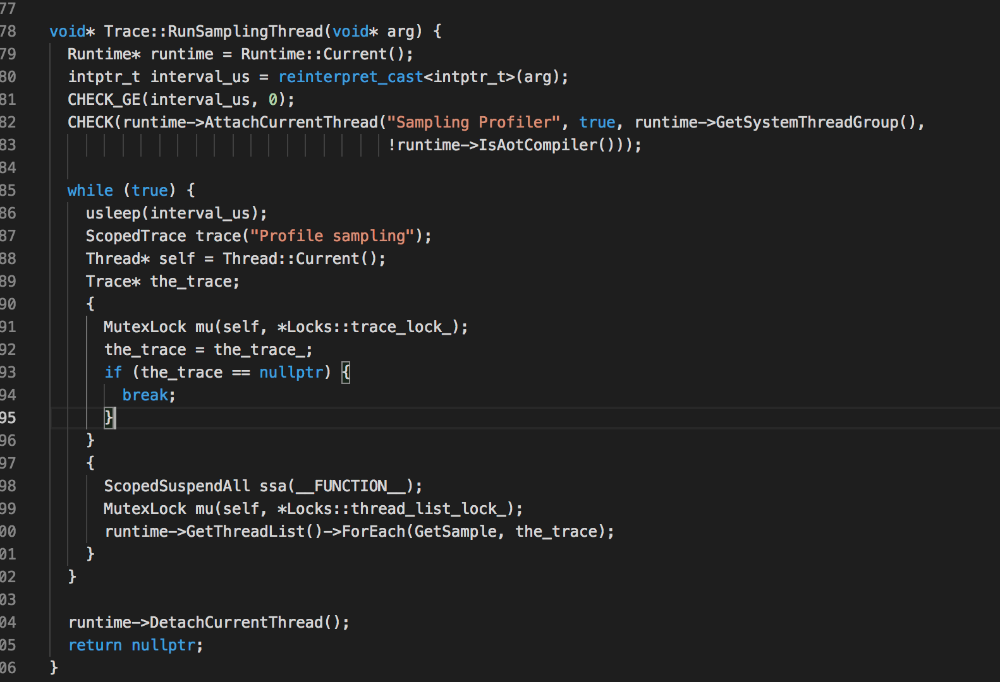
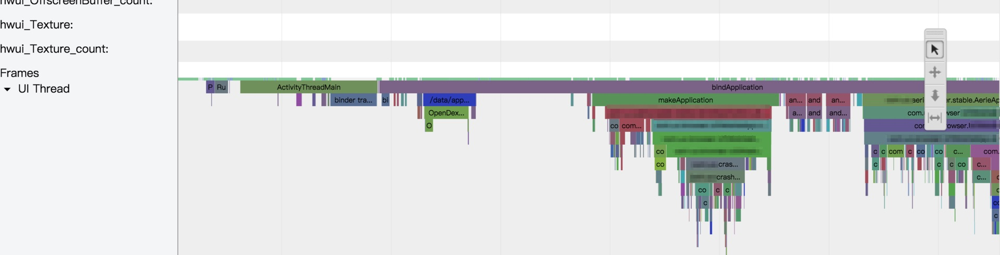
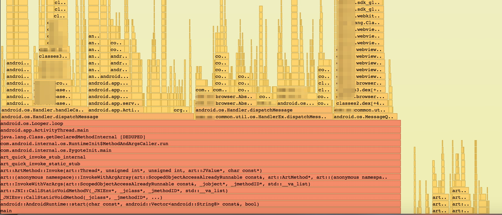
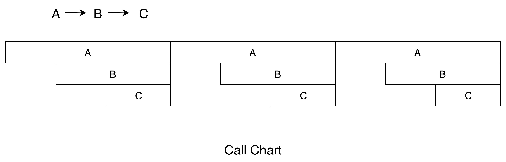
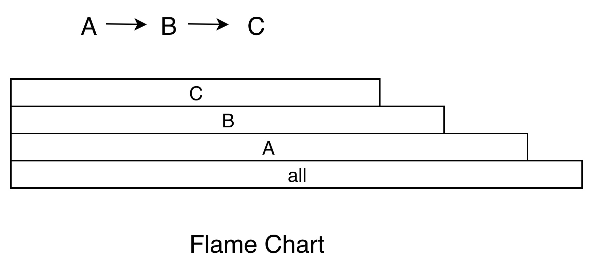

“我的后羿怎么动不了！”，在玩《王者荣耀》的时候最怕遇到团战时卡得跟幻灯片一样。对于应用也是这样，我们经常会听到用户抱怨：“这个应用启动怎么那么慢？”“滑动的时候怎么那么卡？”。
对用户来说，内存占用高、耗费电量、耗费流量可能不容易被发现，但是用户对卡顿特别敏感，很容易直观感受到。另一方面，对于开发者来说，卡顿问题又非常难以排查定位，产生的原因错综复杂，跟 CPU、内存、磁盘 I/O 都可能有关，跟用户当时的系统环境也有很大关系。
那到底该如何定义卡顿呢？在本地有哪些工具可以帮助我们更好地发现和排查问题呢？这些工具之间的差异又是什么呢？今天我来帮你解决这些困惑。
基础知识
在具体讲卡顿工具前，你需要了解一些基础知识，它们主要都和 CPU 相关。造成卡顿的原因可能有千百种，不过最终都会反映到CPU 时间上。我们可以把 CPU 时间分为两种：用户时间和系统时间。用户时间就是执行用户态应用程序代码所消耗的时间；系统时间就是执行内核态系统调用所消耗的时间，包括 I/O、锁、中断以及其他系统调用的时间。
1. CPU 性能
我们先来简单讲讲 CPU 的性能，考虑到功耗、体积这些因素，移动设备和 PC 的 CPU 会有不少的差异。但近年来，手机 CPU 的性能也在向 PC 快速靠拢，华为 Mate 20 的“麒麟 980”和 iPhone XS 的“A12”已经率先使用领先 PC 的 7 纳米工艺。
评价一个 CPU 的性能，需要看主频、核心数、缓存等参数，具体表现出来的是计算能力和指令执行能力，也就是每秒执行的浮点计算数和每秒执行的指令数。
当然还要考虑到架构问题， “麒麟 980”采用三级能效架构，2 个 2.6GHz 主频的 A76 超大核 + 2 个 1.92GHz 主频的 A76 大核 + 4 个 1.8GHz 主频的 A55 小核。相比之下，“A12”使用 2 个性能核心 + 4 个能效核心的架构，这样设计主要是为了在日常低负荷工作时，使用低频核心更加节省电量。在开发过程中，我们可以通过下面的方法获得设备的 CPU 信息。
// 获取 CPU 核心数cat /sys/devices/system/cpu/possible // 获取某个 CPU 的频率cat /sys/devices/system/cpu/cpu0/cpufreq/cpuinfo_max_freq随着机器学习的兴起，现代芯片不仅带有强大的 GPU，还配备了专门为神经网络计算打造的 NPU（Neural network Processing Unit）。“A12”就使用了八核心的 NPU，每秒可执行五万亿次运算。从 CPU 到 GPU 再到 AI 芯片，随着手机 CPU 整体性能的飞跃，医疗诊断、图像超清化等一些 AI 应用场景也可以在移动端更好地落地。最近边缘计算也越来越多的被提及，我们希望可以更大程度地利用移动端的计算能力来降低高昂的服务器成本。
也因此在开发过程中，我们需要根据设备 CPU 性能来“看菜下饭”，例如线程池使用线程数根据 CPU 的核心数，一些高级的 AI 功能只在主频比较高或者带有 NPU 的设备开启。
拓展了那么多再回到前面我讲的 CPU 时间，也就是用户时间和系统时间。当出现卡顿问题的时候，应该怎么去区分究竟是我们代码的问题，还是系统的问题？用户时间和系统时间可以给我们哪些线索？这里还要集合两个非常重要的指标，可以帮助我们做判断。
2. 卡顿问题分析指标
出现卡顿问题后，首先我们应该查看CPU 的使用率。怎么查呢？我们可以通过/proc/stat得到整个系统的 CPU 使用情况，通过/proc/[pid]/stat可以得到某个进程的 CPU 使用情况。
关于 stat 文件各个属性的含义和 CPU 使用率的计算，你可以阅读《Linux 环境下进程的 CPU 占用率》和Linux 文档。其中比较重要的字段有：
proc/self/stat: utime: 用户时间，反应用户代码执行的耗时 stime: 系统时间，反应系统调用执行的耗时 majorFaults：需要硬盘拷贝的缺页次数 minorFaults：无需硬盘拷贝的缺页次数如果 CPU 使用率长期大于 60% ，表示系统处于繁忙状态，就需要进一步分析用户时间和系统时间的比例。对于普通应用程序，系统时间不会长期高于 30%，如果超过这个值，我们就应该进一步检查是 I/O 过多，还是其他的系统调用问题。
Android 是站在 Linux 巨人的肩膀上，虽然做了不少修改也砍掉了一些工具，但还是保留了很多有用的工具可以协助我们更容易地排查问题，这里我给你介绍几个常用的命令。例如，top 命令可以帮助我们查看哪个进程是 CPU 的消耗大户；vmstat 命令可以实时动态监视操作系统的虚拟内存和 CPU 活动；strace 命令可以跟踪某个进程中所有的系统调用。
除了 CPU 的使用率，我们还需要查看CPU 饱和度。CPU 饱和度反映的是线程排队等待 CPU 的情况，也就是 CPU 的负载情况。
CPU 饱和度首先会跟应用的线程数有关，如果启动的线程过多，容易导致系统不断地切换执行的线程，把大量的时间浪费在上下文切换，我们知道每一次 CPU 上下文切换都需要刷新寄存器和计数器，至少需要几十纳秒的时间。
我们可以通过使用vmstat命令或者/proc/[pid]/schedstat文件来查看 CPU 上下文切换次数，这里特别需要注意nr_involuntary_switches被动切换的次数。
proc/self/sched: nr_voluntary_switches： 主动上下文切换次数，因为线程无法获取所需资源导致上下文切换，最普遍的是 IO。 nr_involuntary_switches： 被动上下文切换次数，线程被系统强制调度导致上下文切换，例如大量线程在抢占 CPU。 se.statistics.iowait_count：IO 等待的次数 se.statistics.iowait_sum： IO 等待的时间此外也可以通过 uptime 命令可以检查 CPU 在 1 分钟、5 分钟和 15 分钟内的平均负载。比如一个 4 核的 CPU，如果当前平均负载是 8，这意味着每个 CPU 上有一个线程在运行，还有一个线程在等待。一般平均负载建议控制在“0.7 × 核数”以内。
00:02:39 up 7 days, 46 min, 0 users, load average: 13.91, 14.70, 14.32另外一个会影响 CPU 饱和度的是线程优先级，线程优先级会影响 Android 系统的调度策略，它主要由 nice 和 cgroup 类型共同决定。nice 值越低，抢占 CPU 时间片的能力越强。当 CPU 空闲时，线程的优先级对执行效率的影响并不会特别明显，但在 CPU 繁忙的时候，线程调度会对执行效率有非常大的影响。

关于线程优先级，你需要注意是否存在高优先级的线程空等低优先级线程，例如主线程等待某个后台线程的锁。从应用程序的角度来看，无论是用户时间、系统时间，还是等待 CPU 的调度，都是程序运行花费的时间。
Android 卡顿排查工具
可能你会觉得按照上面各种 Linux 命令组合来排查问题太麻烦了，有没有更简单的、图形化的操作界面呢？Traceview 和 systrace 都是我们比较熟悉的排查卡顿的工具，从实现上这些工具分为两个流派。
第一个流派是 instrument。获取一段时间内所有函数的调用过程，可以通过分析这段时间内的函数调用流程，再进一步分析待优化的点。
第二个流派是 sample。有选择性或者采用抽样的方式观察某些函数调用过程，可以通过这些有限的信息推测出流程中的可疑点，然后再继续细化分析。
这两种流派有什么差异？我们在什么场景应该选择哪种合适的工具呢？还有没有其他有用的工具可以使用呢？下面我们一一来看。
1. Traceview
Traceview是我第一个使用的性能分析工具，也是吐槽的比较多的工具。它利用 Android Runtime 函数调用的 event 事件，将函数运行的耗时和调用关系写入 trace 文件中。
由此可见，Traceview 属于 instrument 类型，它可以用来查看整个过程有哪些函数调用，但是工具本身带来的性能开销过大，有时无法反映真实的情况。比如一个函数本身的耗时是 1 秒，开启 Traceview 后可能会变成 5 秒，而且这些函数的耗时变化并不是成比例放大。
在 Android 5.0 之后，新增了startMethodTracingSampling方法，可以使用基于样本的方式进行分析，以减少分析对运行时的性能影响。新增了 sample 类型后，就需要我们在开销和信息丰富度之间做好权衡。

无论是哪种的 Traceview 对 release 包支持的都不太好，例如无法反混淆。其实 trace 文件的格式十分简单，之前曾经写个一个小工具，支持通过 mapping 文件反混淆 trace。
2. Nanoscope
那在 instrument 类型的性能分析工具里，有没有性能损耗比较小的呢？
答案是有的，Uber 开源的Nanoscope就能达到这个效果。它的实现原理是直接修改 Android 虚拟机源码，在ArtMethod执行入口和执行结束位置增加埋点代码，将所有的信息先写到内存，等到 trace 结束后才统一生成结果文件。
在使用过程可以明显感觉到应用不会因为开启 Nanoscope 而感到卡顿，但是 trace 结束生成结果文件这一步需要的时间比较长。另一方面它可以支持分析任意一个应用，可用于做竞品分析。
但是它也有不少限制：
-
需要自己刷 ROM，并且当前只支持 Nexus 6P，或者采用其提供的 x86 架构的模拟器。
-
默认只支持主线程采集，其他线程需要代码手动设置。考虑到内存大小的限制，每个线程的内存数组只能支持大约 20 秒左右的时间段。
Uber 写了一系列自动化脚本协助整个流程，使用起来还算简单。Nanoscope 作为基本没有性能损耗的 instrument 工具，它非常适合做启动耗时的自动化分析。
Nanoscope 生成的是符合 Chrome tracing 规范的 HTML 文件。我们可以通过脚本来实现两个功能：
第一个是反混淆。通过 mapping 自动反混淆结果文件。
第二个是自动化分析。传入相同的起点和终点，实现两个结果文件的 diff，自动分析差异点。
这样我们可以每天定期去跑自动化启动测试，查看是否存在新增的耗时点。我们有时候为了实现更多定制化功能或者拿到更加丰富的信息，这个时候不得不使用定制 ROM 的方式。而 Nanoscope 恰恰是一个很好的工具，可以让我们更方便地实现定制 ROM，在后面启动和 I/O 优化里我还会提到更多类似的案例。
3. systrace
systrace是 Android 4.1 新增的性能分析工具。我通常使用 systrace 跟踪系统的 I/O 操作、CPU 负载、Surface 渲染、GC 等事件。
systrace 利用了 Linux 的ftrace调试工具，相当于在系统各个关键位置都添加了一些性能探针，也就是在代码里加了一些性能监控的埋点。Android 在 ftrace 的基础上封装了atrace，并增加了更多特有的探针，例如 Graphics、Activity Manager、Dalvik VM、System Server 等。
systrace 工具只能监控特定系统调用的耗时情况，所以它是属于 sample 类型，而且性能开销非常低。但是它不支持应用程序代码的耗时分析，所以在使用时有一些局限性。
由于系统预留了Trace.beginSection接口来监听应用程序的调用耗时，那我们有没有办法在 systrace 上面自动增加应用程序的耗时分析呢？
划重点了，我们可以通过编译时给每个函数插桩的方式来实现，也就是在重要函数的入口和出口分别增加Trace.beginSection和Trace.endSection。当然出于性能的考虑，我们会过滤大部分指令数比较少的函数，这样就实现了在 systrace 基础上增加应用程序耗时的监控。通过这样方式的好处有：
-
可以看到整个流程系统和应用程序的调用流程。包括系统关键线程的函数调用，例如渲染耗时、线程锁，GC 耗时等。
-
性能损耗可以接受。由于过滤了大部分的短函数，而且没有放大 I/O，所以整个运行耗时不到原来的两倍，基本可以反映真实情况。
systrace 生成的也是 HTML 格式的结果，我们利用跟 Nanoscope 相似方式实现对反混淆的支持。

4. Simpleperf
那如果我们想分析 Native 函数的调用，上面的三个工具都不能满足这个需求。
Android 5.0 新增了Simpleperf性能分析工具，它利用 CPU 的性能监控单元（PMU）提供的硬件 perf 事件。使用 Simpleperf 可以看到所有的 Native 代码的耗时，有时候一些 Android 系统库的调用对分析问题有比较大的帮助，例如加载 dex、verify class 的耗时等。
Simpleperf 同时封装了 systrace 的监控功能，通过 Android 几个版本的优化，现在 Simpleperf 比较友好地支持 Java 代码的性能分析。具体来说分几个阶段：
第一个阶段：在 Android M 和以前，Simpleperf 不支持 Java 代码分析。
第二个阶段：在 Android O 和以前，需要手动指定编译 OAT 文件。
第三个阶段：在 Android P 和以后，无需做任何事情，Simpleperf 就可以支持 Java 代码分析。
从这个过程可以看到 Google 还是比较看重这个功能，在 Android Studio 3.2 也在 Profiler 中直接支持 Simpleperf。
顾名思义，从名字就能看出 Simpleperf 是属于 sample 类型，它的性能开销非常低，使用火焰图展示分析结果。

目前除了 Nanoscope 之外的三个工具都只支持 debugable 的应用程序，如果想测试 release 包，需要将测试机器 root。对于这个限制，我们在实践中会专门打出 debugable 的测试包，然后自己实现针对 mapping 的反混淆功能。其中 Simpleperf 的反混淆比较难实现，因为在函数聚合后会抛弃参数，无法直接对生成的 HTML 文件做处理。当然我们也可以根据各个工具的实现思路，自己重新打造一套支持非 debugable 的自动化测试工具。
选择哪种工具，需要看具体的场景。我来汇总一下，如果需要分析 Native 代码的耗时，可以选择 Simpleperf；如果想分析系统调用，可以选择 systrace；如果想分析整个程序执行流程的耗时，可以选择 Traceview 或者插桩版本的 systrace。
可视化方法
随着 Android 版本的演进，Google 不仅提供了更多的性能分析工具，而且也在慢慢优化现有工具的体验，使功能更强大、使用门槛更低。而 Android Studio 则肩负另外一个重任，那就是让开发者使用起来更加简单的，图形界面也更加直观。
在 Android Studio 3.2 的 Profiler 中直接集成了几种性能分析工具，其中：
-
Sample Java Methods 的功能类似于 Traceview 的 sample 类型。
-
Trace Java Methods 的功能类似于 Traceview 的 instrument 类型。
-
Trace System Calls 的功能类似于 systrace。
-
SampleNative (API Level 26+) 的功能类似于 Simpleperf。
坦白来说，Profiler 界面在某些方面不如这些工具自带的界面，支持配置的参数也不如命令行，不过 Profiler 的确大大降低了开发者的使用门槛。
另外一个比较大的变化是分析结果的展示方式，这些分析工具都支持了 Call Chart 和 Flame Chart 两种展示方式。下面我来讲讲这两种展示方式适合的场景。
1. Call Chart
Call Chart 是 Traceview 和 systrace 默认使用的展示方式。它按照应用程序的函数执行顺序来展示，适合用于分析整个流程的调用。举一个最简单的例子，A 函数调用 B 函数，B 函数调用 C 函数，循环三次，就得到了下面的 Call Chart。

Call Chart 就像给应用程序做一个心电图，我们可以看到在这一段时间内，各个线程的具体工作，比如是否存在线程间的锁、主线程是否存在长时间的 I/O 操作、是否存在空闲等。
2. Flame Chart
Flame Chart 也就是大名鼎鼎的火焰图。它跟 Call Chart 不同的是，Flame Chart 以一个全局的视野来看待一段时间的调用分布，它就像给应用程序拍 X 光片，可以很自然地把时间和空间两个维度上的信息融合在一张图上。上面函数调用的例子，换成火焰图的展示结果如下。

当我们不想知道应用程序的整个调用流程，只想直观看出哪些代码路径花费的 CPU 时间较多时，火焰图就是一个非常好的选择。例如，之前我的一个反序列化实现非常耗时，通过火焰图发现耗时最多的是大量 Java 字符串的创建和拷贝，通过将核心实现转为 Native，最终使性能提升了很多倍。
火焰图还可以使用在各种各样的维度，例如内存、I/O 的分析。有些内存可能非常缓慢地泄漏，通过一个内存的火焰图，我们就知道哪些路径申请的内存最多，有了火焰图我们根本不需要分析源代码，也不需要分析整个流程。
最后我想说，每个工具都可以生成不同的展示方式，我们需要根据不同的使用场景选择合适的方式。
总结
在写今天的文章，也就是分析卡顿的基础知识和四种 Android 卡顿排查工具时，我越发觉得底层基础知识的重要性。Android 底层基于 Linux 内核，像 systrace、Simpleperf 也是利用 Linux 提供的机制实现，因此学习一些 Linux 的基础知识，对于理解这些工具的工作原理以及排查性能问题，都有很大帮助。
另一方面，虽然很多大厂有专门的性能优化团队，但我觉得鼓励和培养团队里的每一个人都去关注性能问题更加重要。我们在使用性能工具的同时，要学会思考，应该知道它们的原理和局限性。更进一步来说，你还可以尝试去为这些工具做一些优化，从而实现更加完善的方案。
课后作业
当发生 ANR 的时候，Android 系统会打印 CPU 相关的信息到日志中，使用的是ProcessCpuTracker.java。但是这样好像并没有权限可以拿到其他应用进程的 CPU 信息，那能不能换一个思路？
当发现应用的某个进程 CPU 使用率比较高的时候，可以通过下面几个文件检查该进程下各个线程的 CPU 使用率，继而统计出该进程各个线程的时间占比。
/proc/[pid]/stat // 进程 CPU 使用情况/proc/[pid]/task/[tid]/stat // 进程下面各个线程的 CPU 使用情况/proc/[pid]/sched // 进程 CPU 调度相关/proc/loadavg // 系统平均负载，uptime 命令对应文件如果线程销毁了，它的 CPU 运行信息也会被删除，所以我们一般只会计算某一段时间内 CPU 使用率。下面是计算 5 秒间隔内一个 Sample 进程的 CPU 使用示例。有的时候可能找不到耗时的线程，有可能是有大量生命周期很短的线程，这个时候可以把时间间隔缩短来看看。
usage: CPU usage 5000ms(from 23:23:33.000 to 23:23:38.000):System TOTAL: 2.1% user + 16% kernel + 9.2% iowait + 0.2% irq + 0.1% softirq + 72% idleCPU Core: 8Load Average: 8.74 / 7.74 / 7.36 Process:com.sample.app 50% 23468/com.sample.app(S): 11% user + 38% kernel faults:4965 Threads: 43% 23493/singleThread(R): 6.5% user + 36% kernel faults：3094 3.2% 23485/RenderThread(S): 2.1% user + 1% kernel faults：329 0.3% 23468/.sample.app(S): 0.3% user + 0% kernel faults：6 0.3% 23479/HeapTaskDaemon(S): 0.3% user + 0% kernel faults：982 ...今天的课后作业是，请你在留言区解读一下上面的信息，分享一下你认为这个示例的瓶颈在什么地方。之后能不能更进一步，自己动手写一个工具，得到一段时间内上面的这些统计信息。同样最终的实现可以通过向Sample发送 Pull Request。
COMMUNITY NOTES
读者评论
高级的东西看的越多，越觉得Android高深的东西都是在Andriod之外的~
8核cpu，平均负载8，idle时间去到72%，说明应用运行中系统CPU性能有很大的盈余。sample应用时间分布大头在kernel，细分看线程，SingleThread是主要耗时线程，并且共发生了3094次缺页异常(faults字段)。缺页异常的处理是在内核空间，也解释了kernel 耗时大头的原因，而这里做的操作就是读写磁盘。猜测可能是很多小文件的读写。综合分析瓶颈应该是sample将io集中在一个线程中处理，系统的全部cpu没有利用上，一核忙死，其他3核闲死。
有点深了，表示看不太懂
很多没有接触的工具，还是需要去了解一下Linux方面的基础，后面的作业没看太明白
理论是基石，例子是上层建筑。希望作者多结合一些实际案例讲解，理论太多，感觉很空洞。作为付费用户，这个要求不高吧。
感觉这个课可能更适用于比较深入研究过内存方面知识的人，但是大部分人应该都是开发业务的程序员，想对这方面做个系统的学习，感觉还是有点难了，给出的课后作业，有点一脸懵逼，有点无从下手的感觉
大神，能给Linux的学习路线吗
各种命令一脸懵逼
歪个楼，想请教大神们一个问题，我司的项目打debug签名的包跑在Android8.0以上的机器时会非常卡，换成release签名就很流畅。在8.0以下的手机上运行release和debug的包都很流畅，不知道是不是8.0限制了debug包的运行内存，想在这里问下有遇到相同情况的同学吗？
希望作者能给出个深入学习的路线图
通过读取文件获取进程cpu,线程cpu等使用状态的一个问题是在不少机型上，没有读取这些文件的权限。如果需要将release版本的这些性能数据采集并上传供数据分析，数据的采集就是一个问题，比如线程cpu使用率，常规的做法是才用两个间隔时间较短的cpu快照，然后计算应用cpu使用时间在系统cpu使用时间所占的比例，但是cpu使用时间是一个一个时间片，上述的统计方法并不够准确
太极客了吧，讲的东西感觉像是华山论剑！
绍文哥，我又来了。我比较感兴趣之前内存优化文章里面提到对 Bitmap 的优化，可以[通过直接调用 libandroid_runtime.so 中 Bitmap 的构造函数]来创建一个空的 nativeBitmap 对象，但这个操作跟平时自己通过 jni 调用自己编译的 so 包里的 native 方法不太一样，网上也找不到例子来说明这个过程，所以能不能把这个过程再描述详细一点，或者最好是能 show me code，我也想自己实操一遍你说的那些点，非常感谢。
虽然好多东西不懂或者没听过，但是这么系统的了解下还是比较好的，等以后慢慢会看消化。作为一个当枪匹马干了5年的开发来说，争取以后慢慢把这些一点点应用到开发中，建议绍文大神可以在以后的课程中讲解中结合单干者的开发场景做一些分享，感谢大佬分享，也希望单干着一起交流。
表示很有用，满满的干货
那么，递归函数，能通过插桩来分析吗？估计还是要放在上层函数里
可以详细讲解systrace的分析思路吗？ systrace生成的html里面内容太多了
虽然只看懂一点皮毛，但是文章的文风真的很好，读起来很顺畅。
看完了，还是不知道这几个工具怎么用。
卡顿、anr这一块儿，去年研究了一些，正好也搞了cputracker，总算这篇文章看起来没前面这么懵逼了。。。